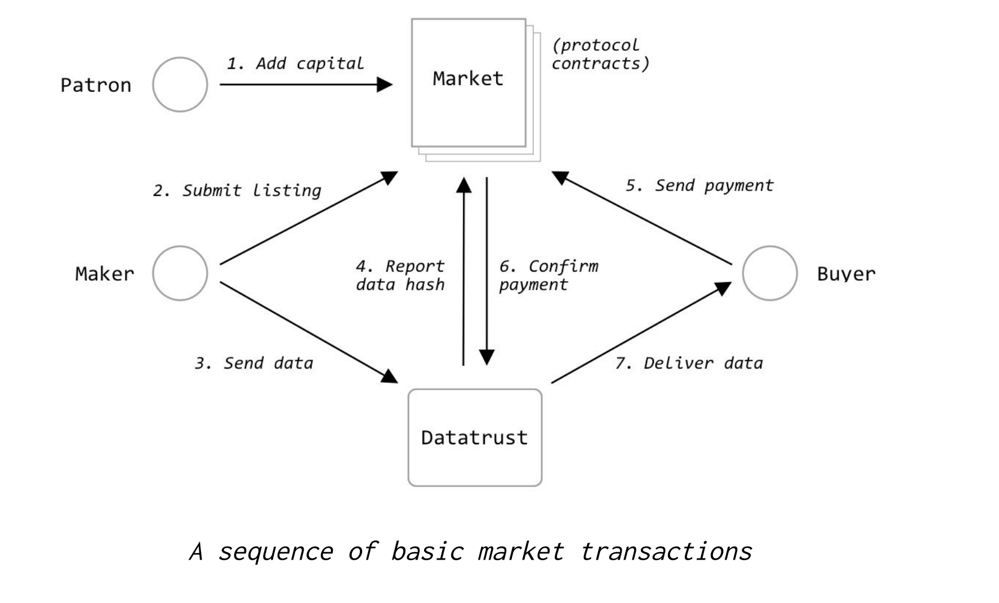

Introduction
The Computable protocol creates decentralized data
markets. The global Computable network is made up of
many individual markets. Each market conceptually holds
a single collection of data and is created and
controlled by the owners of this data. These owners
could correspond to existing organizations, or could be
a decentralized set of interested parties. The
coordination and access control for these individual
market instances is coordinated by a set of smart
contracts.
Each market allows for a set of associated financial
operations. These operations allow interested “patrons”
to support a particular data market with funds,
“makers” to contribute data in return for partial
ownership in the market, and “buyers” to purchase data
from the data market. To facilitate these
transactions, each market has a unique associated
MarketToken.
Everything described above is implemented in a set of
smart contracts which currently live on the
Ethereum
blockchain. The data itself doesn’t live on the smart
contracts. Datasets can be very large (gigabytes,
terabytes, petabytes, exabytes or more) and smart
contract systems have limited “on-chain” storage.
Consequently, it would be infeasible to store such
large collections of data on Ethereum. For this reason,
data lives “off-chain” in Datatrusts. A Datatrust
is a software system that is responsible for storing
data and coordinating with on-chain permissions layers.
Note that many possible Datatrust implementations are
possible by different vendors or groups, so long as
each implementation responds to the API specified
within this specification.
Users can interact with the raw smart contracts through downstream API libraries which allow for programmatic access to smart contract state. Taken together, the trio of smart contracts, datatrust, and user facing front-end provide for a type of “operating system” which allows a decentralized, distributed community of individuals to manage and grow a dataset. Decentralized control of data is the heart of the Computable protocol.

This website is an introduction to the core Computable protocol and downstream libraries. It is designed to be read end-to-end, book style, and will provide you with a working understanding of the full protocol and the libraries that enable interaction with it. This document is a living, versioned specification. As understanding of the core aspects of the Computable protocol grows, this document will be updated accordingly.
The site is organized in book format. It’s designed to be possible to read from end to end cogently. We try to provide additional context for newcomers to the field and explain intuitions and ideas and not just the raw mechanics. By the time you finish reading this book, you should be prepared to contribute to existing data markets, and even launch your own data market to get started on gathering new and interesting data. Even more importantly, you should have an understanding of the challenges of decentralizing control and ownership of data and a solid working understanding of the libraries Computable provides to help you tackle this problem. Welcome onboard to the Computable community! It’s going to be a ride!
 Jul 11, 2019
Jul 11, 2019
 Edit this page
Edit this page